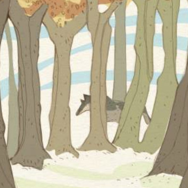
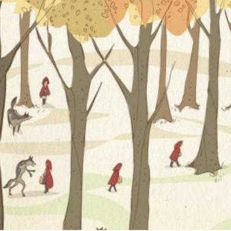

Justo cuando el lobo estaba a punto de saltar sobre Caperucita Roja, algo inesperado ocurrió. El lobo, al ver la inocencia y la valentía en los ojos de la niña, sintió un profundo arrepentimiento por sus acciones. Se detuvo y, en lugar de atacar, comenzó a llorar amargamente.
Caperucita Roja, sorprendida por la repentina reacción del lobo, se acercó con cautela y le preguntó al lobo por qué lloraba. El lobo, entre sollozos, confesó que siempre había sido un ser solitario y que su maldad provenía de su soledad y hambre. Explicó que nunca había tenido amigos y que su instinto de supervivencia lo había llevado a cometer actos terribles.
Caperucita Roja, conmovida por la sinceridad del lobo, decidió perdonarlo. En ese momento, el lobo arrepentido escupe a la abuela en una sola pieza. Juntas, la abuela y Caperucita Roja ofrecieron al lobo un plato de comida y le pidieron que se quedara con ellas para aprender sobre la bondad y la amistad.
El lobo, sorprendido por la amabilidad de la niña y su abuela, aceptó la oferta y se comprometió a cambiar sus maneras. Pasaron los días y el lobo comenzó a ayudar en las tareas del hogar, a cazar de manera justa y a cuidar del bienestar de la abuela. Poco a poco, el lobo se ganó la confianza de Caperucita y su abuela.
El lobo aprendió a cultivar el jardín, a recoger leña y a cocinar. Caperucita Roja le enseñó a leer y a escribir, y juntos pasaban las tardes leyendo historias junto al fuego. El lobo también comenzó a ayudar a los aldeanos en sus labores diarias, y con el tiempo, se convirtió en un miembro valioso de la comunidad.
Los aldeanos, al principio recelosos, comenzaron a aceptar al lobo cuando vieron su dedicación y su voluntad de cambiar. El lobo trabajaba arduamente para demostrar que había dejado atrás sus días de maldad. Ayudaba a los granjeros con sus cosechas, protegía a los animales del bosque y jugaba con los niños de la aldea.
Con el tiempo, el lobo se convirtió en un símbolo de redención y esperanza. Caperucita Roja y su abuela se sintieron orgullosas de haber dado al lobo una segunda oportunidad. La abuela, que había vivido muchos años sola, encontró en el lobo un amigo leal y protector.
Un día, un grupo de lobos hambrientos llegó a la aldea y comenzó a causar estragos. El lobo, ahora cambiado, enfrentó a sus antiguos camaradas y les habló sobre la importancia de la convivencia pacífica con los humanos. Convenció a los lobos de que podrían vivir en armonía y trabajar junto a los aldeanos.
Los lobos, inspirados por el cambio de su antiguo líder, decidieron seguir su ejemplo y se unieron a la comunidad. Así, la aldea y los lobos del bosque formaron una alianza que benefició a todos. Juntos, cultivaron la tierra, compartieron recursos y vivieron en paz.
Y así, Caperucita Roja, su abuela y el lobo vivieron felices, enseñando a todos los que conocían sobre la importancia del arrepentimiento, el perdón y la capacidad de cambiar para mejor. La historia del lobo arrepentido se convirtió en una leyenda que se contaba de generación en generación, recordando a todos que incluso el corazón más oscuro puede encontrar la luz con un poco de compasión y amor.